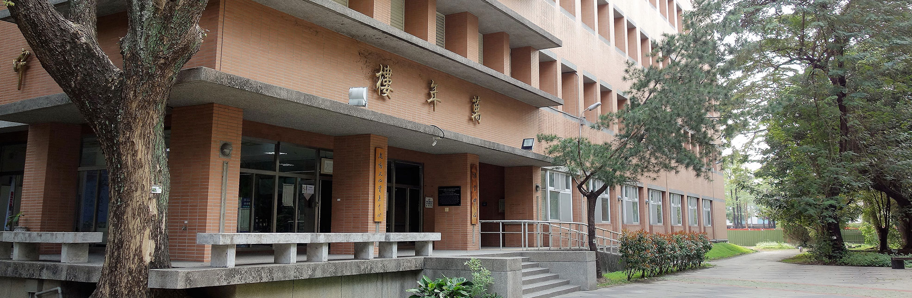

|  |
|---|
Language Center |
History |
|
About us |
|
Floor Guide |
|
B1F
Special Collection Room 1F
College of Liberal Arts Library 2F
Digital Language Labs 3F
4F
5F
|
Back to home |
| ©National Chung Hsing University |
| 國立中興大學 |
| No. 145, Xingda Rd., South Dist., Taichung City 402, Taiwan |
| Tel : 04-22873181 |